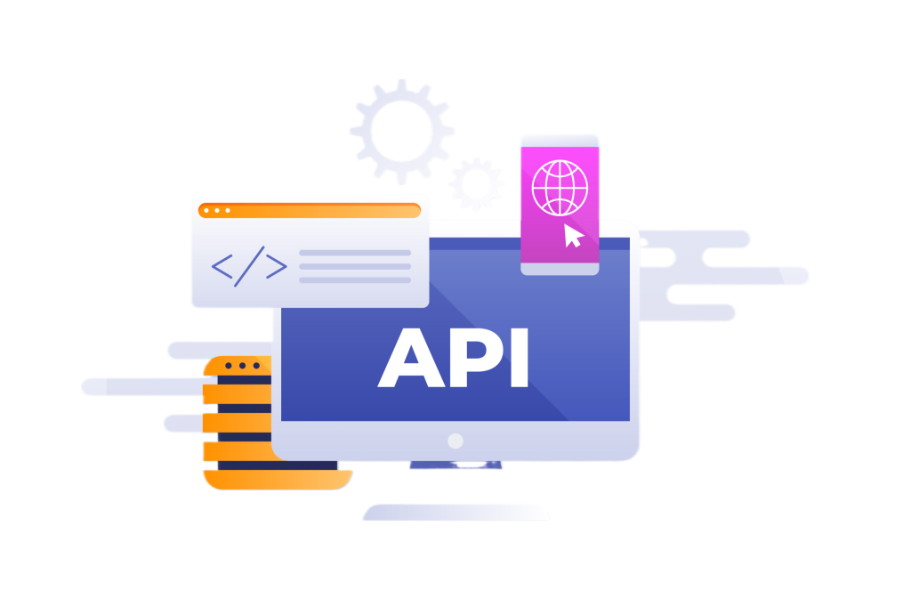

Performed comprehensive data cleaning on Nashville housing data using SQL. Tasks included standardizing date formats, splitting addresses, handling nulls, updating categorical values, removing duplicates, and dropping unnecessary columns.
Performed in-depth analysis of global COVID-19 data using SQL, including trends in infections, deaths, and vaccinations. Utilized joins, CTEs, temp tables, and views to derive insights and prepare data for visualization.
Check out my Tableau Public profile to view an interactive dashboard I created, showcasing my skills in data visualization and analytical storytelling.

This project explores the relationship between movie budgets, gross earnings, and other features using Python, Pandas, and Seaborn.
Developed a Python script using Selenium and BeautifulSoup to automate daily price tracking of a product on Amazon. Extracted product name and price, cleaned the data, and stored it in an Excel file for historical comparison.

Built a Python script to automate data extraction from a public API and append the retrieved data to an existing Excel file. Implemented scheduling logic for periodic data pulls and ensured seamless appending without overwriting existing records.
Developed an interactive dashboard to explore global trends among data professionals, including roles, salary distribution, tools used, and country-wise participation. Enabled dynamic filtering by experience level, country, and job title for targeted analysis.